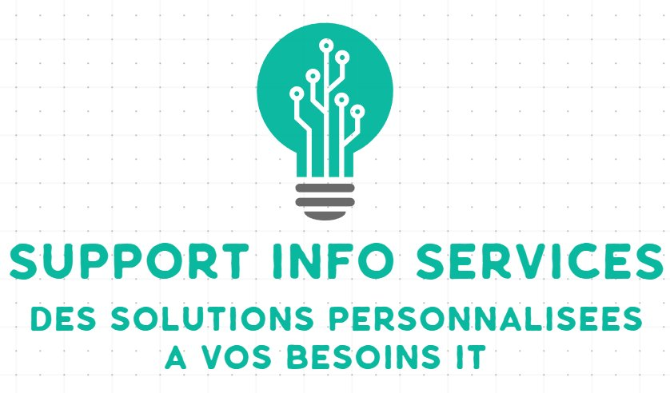

Vente et installation de matériel informatique
Du matériel fiable, durable et performant
Nous sommes partenaires privilégiés avec de grands constructeurs, et pouvons ainsi fournir à notre clientèle des équipements informatiques de haute qualité à des tarifs avantageux. Qu'il s'agisse d'ordinateurs portables ou fixes, de téléphonie, de tablettes, PDA, imprimantes, serveurs, routeurs, onduleurs, etc. Notre ambition est de vous apporter le matériel dont vous avez réellement besoin, qui correspond à vos exigences de qualité et de budget.
Nous vous guidons à chaque étape de votre projet, qu'il s'agisse d'achat ou de renouvellement de vos équipements informatiques : nos prestations vont de l'audit-conseil jusqu'à la mise en fonctionnement de votre matériel. Si besoin, nous dépannons et réparons rapidement votre matériel.
Vos avantages
- Des tarifs très compétitifs, grâce à nos partenariats forts avec Intel, AMD, Dell, HP, Canon et Zebra.
- Nos conseils sur les matériels les mieux adaptés à vos besoins, et respectant votre budget.
- Notre haut niveau d'expertise sur l'entretien et la maintenance.